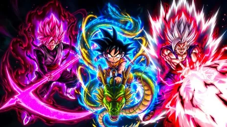
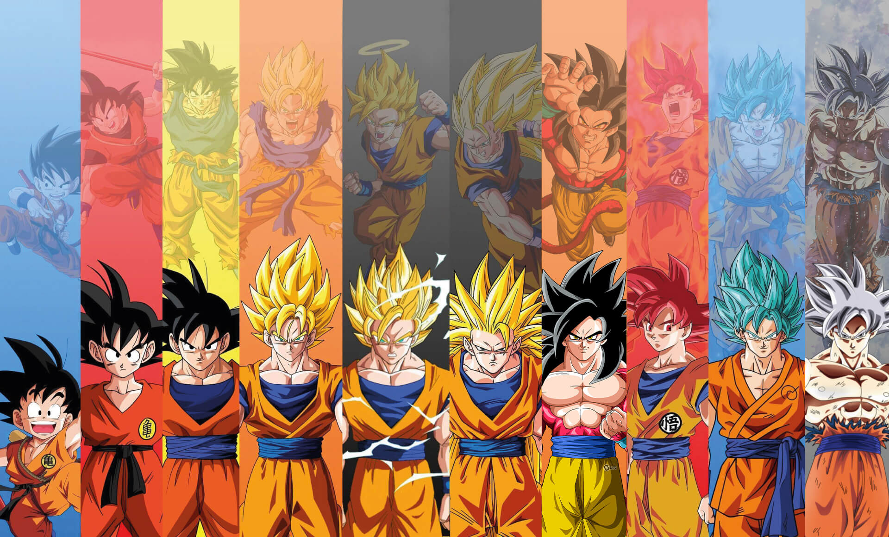

¿Quién es Goku?
Nacido como Kakarotto en el Planeta Vegeta, fue enviado a la Tierra para conquistarla. Sin embargo, un golpe en la cabeza cambió su destino, convirtiéndolo en el protector más grande del universo.
Goku no pelea por obligación moral, sino por una pasión genuina hacia el combate y la autosuperación constante.

Evolución de Poder
Dragon Ball (Niño)
- Entrenamiento: Con el Abuelo Gohan y Maestro Roshi.
- Ozaru: Transformación en mono gigante al ver la luna llena.
Dragon Ball Z
- Kaioken: Multiplica fuerza y velocidad.
- Super Saiyajin (1, 2, 3): Desde la furia contra Freezer hasta el nivel máximo contra Majin Buu.
Dragon Ball Super
- SSJ Dios (Rojo): Nivel divino alcanzado con el ritual de seis Saiyajins.
- SSJ Blue: El poder del Dios imbuido en la forma Super Saiyajin.
- Ultra Instinto: El cuerpo reacciona sin pensar, superando a los dioses.
Dragon Ball GT
- Super Saiyajin 4: La unión de la esencia Ozaru y el poder Saiyajin.
Técnicas Maestras
Kamehameha
Su ataque de energía firma, aprendido del Maestro Roshi y perfeccionado para destruir planetas.
Genkidama
Energía recolectada de todos los seres vivos. Es su recurso final contra la maldad pura.
Teletransportación
Movimiento instantáneo aprendido de los habitantes del Planeta Yardrat tras la batalla con Freezer.
"Gracias, Maestro Toriyama, por enseñarnos a romper nuestros límites."